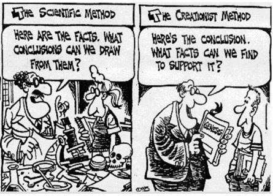

Towards Rational Thinking!
by Lakshmi Das G
Everyone thinks that they think rationally. But going by the interactions on online social spaces [and in
real world], we also see that we believe every other person is being highly irrational. So, what I'm
setting out to explore is-
Does this mean rationality is highly subjective? And if so, why?
And secondly can scientific temperament help in bridging these irrational divides?
The silent ones
Before we get to the groups, that are often at each other's throats during discussions, we need to
acknowledge the existence of a 3rd entity that holds silence as the golden principle.
They may say, "we are busy with 'real' work”. One presumption is that those people have mostly conditioned
their mind to a world, that includes only people and emotions, similar or familiar to them.
Which means they would inevitable react when 'it' touches their livelihood. History teaches us that it would
be too late to act at that time. An easy reference isthe frog-on-hot-water analogy.
Another school of thought is, “what change is it going to make, if I think or talk about it?”. Since 'human'
is an ethical-being, we have an inherent responsibility to listen and address issues faced by people
marginalized on race, demography, gender etc.
To those who say “…but we do respond”, do you not remain selectively silent keeping boundaries like family,
state and nation?
There is no boundary to be an ethical-being and there are no precedence requirements, vis-à-vis one must
respond to ALL events. Also, the essence of great interventions has never been 'absolute' outcomes.
Therefore, it's imperative we realize that even well-meant donations, lending helping hand to less
privileged people, etc, rarely result in an 'absolute' change in the situation. This is applicable for the
likes of "making the world for all", "go green to save world", “gender equality” etc too. Associating with
these are not 'absolute' solution based, but with the understanding that our interventions will lead to the
'next step' of the intervention.
Not taking even a single step or not uttering a single word is basically the worst, if not most cowardly
response.
Also, the other groups (that we get into in below sections) subsumes you within their group as a default,
exactly because of this submissive silence.
Tribalism
Next while looking into the over passionate, extremist group [they will say “no you are the extremist…”, but
we shall address that in a later passage], we need to understand how a 'group' works and how it has evolved in
the cognitive evolution cycle.
For easier illustration, imagine you are in a family gathering or a team-outing event. Someone comes up with
the idea of playing a game, we go ahead and divide into two teams/groups to play the game. Suddenly a new
sense of 'groupism' comes into effect, that didn't exist before. During the entire game, the team members show
revelry and competition to win over/outdo the other team. In order to inject more group mentality, the team
leader can assign some colour, flag, logo or slogan. By introducing additional props to the setup, the team
leader could tap into unconscious 'basic instinct' of groups to compete with anyone outside their group. While
in college itself we have seen such group with names like “Royal Mech”, “Kottayam group” etc (and these groups
are common even now in Engineering colleges, at least across Kerala)
Now map this 'group' exercise to a larger construct like religion, political ideology or race. You can
identify that the team members get a feel of affiliation, protection and sense of belongingness… as if they
are in their mother's lap. The loyalty towards group insiders and hostility towards outsiders comes out
immediately, while its intensity may vary over time. They gain approval from their own group for any actions
they do against their opponents. There is also a magnification of feelings like pride, superiority, exclusive
ownership, and entitlement.
In a Tehelka leaked video, a leader of one of the Sangh organizations said that he felt a sense of
"…satisfaction and meaning…" while he was actively involved in 2-3 days of the 2002 Gujarat riots. Another
common trait in this 'groupishness', in addition to the constantly talking of uniqueness of their race, colour
etc., comes proclamations of being the 'chosen ones' by god. If not god then it's the proclamation of being on
the 'right[eous] side' while the 'other' are obviously on the wrong/corrupt side. History gives us enough
recurring examples of this behaviour from Hitler's, as well as left or right-wing leaders speeches.
Another tell-tale signature is that the rationale/reasonings/memory [if we may put it so] of the group while
'logical' within their group boundaries, outsiders often fail to understand its relevance, importance; and
usually find them extremely illogical. Also, what come out in this context is the importance of the group over
the individual, whereby the individual is forced to ignore rational thinking, and not apply their
intelligence. Which is why we find so many skilled engineers and doctors, people of science get squeamish when
we talk of evolution from apes or the age of the earth versus what's mentioned in their 'one book'. The same
applies to Marxist/Communist 'believers' also, who follow their leaders with blind allegiance to the
Marxist/Communist dogma and not any rational thinking.
In most societies, all the above behaviour patterns are followed in some fashion. While extreme
left/right-wing politicians and man-made-gods across the globe have played this card for a while, the advent
of internet made things easier for many more.
Side effects of Tribalism
This tribal groupism thrives on the constant paranoia of the 'other' who is out to deprive what is rightfully
yours. So, this requires groups maintain a force for 'defending' themselves (and they will always have an
opponent internal or external to fight with). This in turn results in causalities and every such group start
to idolize martyrs and sacrifices. We have seen the culture of political parties that need 'rakthasakshigal'.
The vulnerability and the sacrifices (martyr) are normally increased among youths and they are usually below
25 years of age. It is evident when you check the number of film star fans association members in their 40s or
50s.
For anything that contradicts the groups beliefs, the tribal mentality negates out information that
contradicts the ways that the tribe believes. Additionally, it is wired to soak in more information that
supports the groups beliefs. The recommender systems in the Facebook, YouTube search results etc essentially
works the same way. So, we are what we watch and read. One of the scientific papers pointed out that the
frontal cortex of a human brain developed only by 25 years of age. So, until one is 25 years old, emotion and
irrationality can easily get re-prioritized in anyone's brain. This is why religious dogmas are easy to wire
into an individual as infants, i.e. most of us are born into a religion, it's not by choice as adults. This is
also the reason why some people find it easy to believe that CIA is behind most issues around global problems,
Bill Gates as the reason for Corona, Akbar as the cruel emperor who destroy India and vegetables from
Tamilnadu as the main reason for cancer in Kerala. Please note that only 3% of the cancer in Kerala are
related to chemicals in food.
Obviously during hunter-gatherer periods in history, the need for aggregating in groups would have definitely
been beneficial for survival. The evolution of our brain tilting favourably towards tribal group attitudes
then seems ok. But the human race has progressed, and if we have to acknowledge that the world, we inhabit
isn't primitive and tribal. So, if someone shows too much group affiliation, you can easily say he/she is
showing tribal mentality and the chance of exhibiting other tribal attitudes towards outsiders of their group
too is high.
Scientific temper
The fundamentals of a scientific and rational approach are that it always navigates from studying
phenomenon; and then towards the conclusions/laws/principles. Tribal groups always postulate the law first
and defines the phenomenon so as to match the laws.
Since religion is one of the biggest tribal groups, you can substitute religion in all places where the
word, 'group' or 'tribal' is being used in this article. Though it isn't the only one we see nowadays
floating around on FB, WhatsApp or even our TV talk shows.
So, what is the way out of a biologically coded mental state that prefers by default tribal groupism? As
Richard Dawkins said, "Humans are built as gene machines and cultured as meme machines, but we have power to
rebel against the tyranny of the selfish replicators." Our societies have advanced from where we before
enjoyed war-like gladiatorial games, to fair games like football, cricket etc… where a footballer still
scores for a team. Even in individualistic sports like Tennis, the rules and fairness are definitely valued
and the sport is no less gladiatorial. We can divert the energy in social interactions to induce logic and
fairness in all our dealings. Biology is not the destiny. By using a developed or fully grown brain, human
can overcome the genetic temptations and that is the way of life for a modern mind or a rationalist.

Then voices of women, or people who don't conform to the binary gender, or needs of other sections of
society who are in less privilege situations, etc can be listened to rationality. Issues only arise if we
listen to these with the rigid laws of the 'group' which is sacrosanct. Please note that religion is not a
pre-requisite to be kind towards other people in society. For illustration of a opposite outcome for this,
check-up news articles related to Buddhist monks' leader in Myanmar who while preaching to avoid killing
even mosquitos, pushed for killing of more than thousands of people from the Rohingya community [2].
As per Wikipedia, "the Scientific temper is a way of life which uses the scientific method and which may,
consequently, include questioning, observing physical reality, testing, hypothesizing, analysing, and
communicating". Scientific temperament is the easiest way for anyone to start thinking freely and follow
their needs than bending their principles towards (real or imaginary) tribal leader' wish. "Scientific
temper" describes an attitude which involves the application of logic. Discussion, argument and analysis are
vital parts of scientific temper. Elements of fairness, equality and democracy are built into it. The Prime
Minister of India, Jawaharlal Nehru was the first to use the phrase in 1946 in India [3]. Since Nehru is the
reason for “most” contemporary changes and it is required in all places, I conclude this article with this
historical fact 😂.